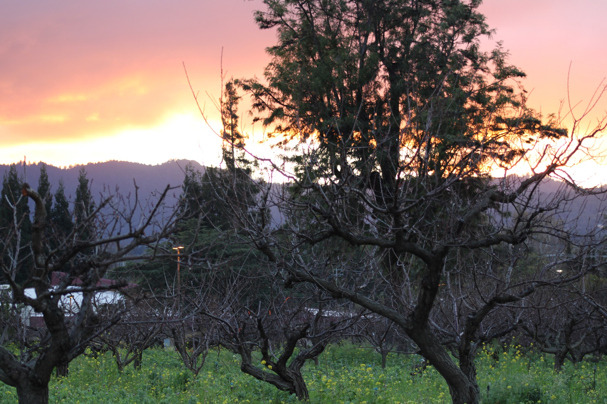
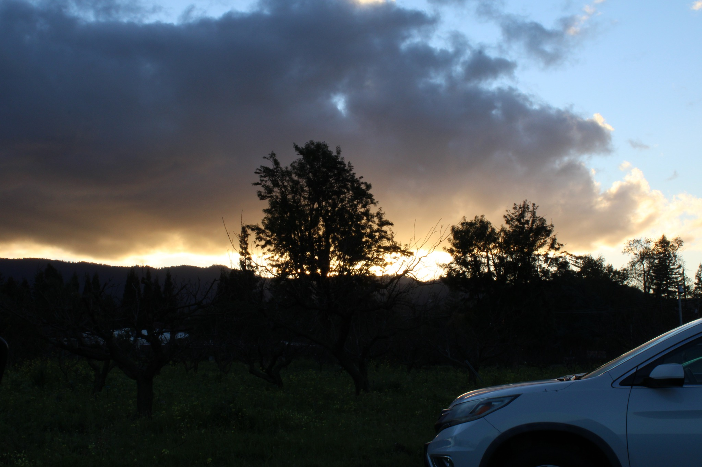
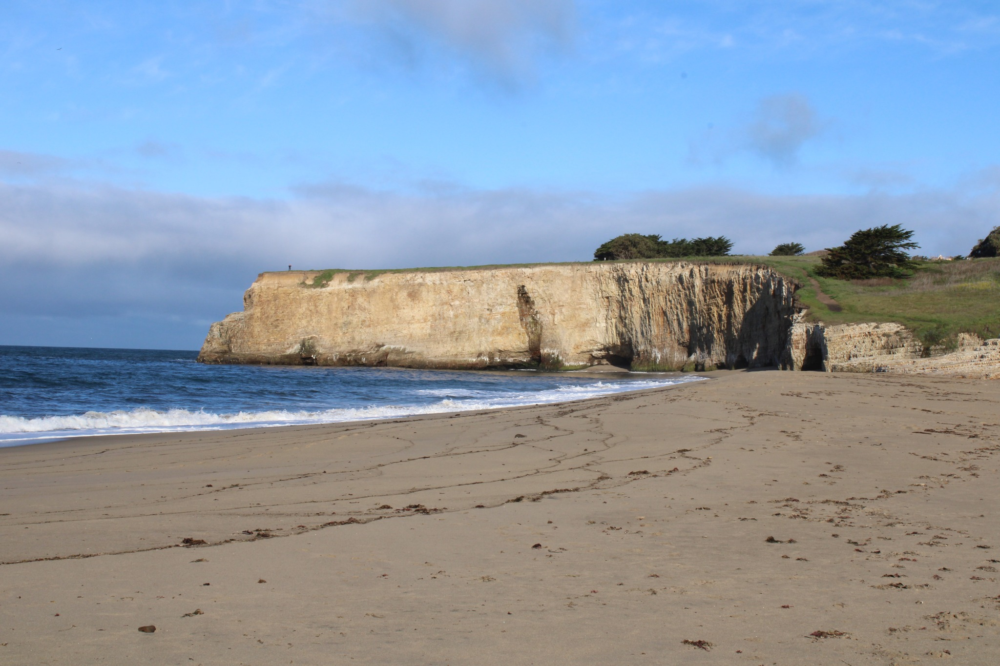
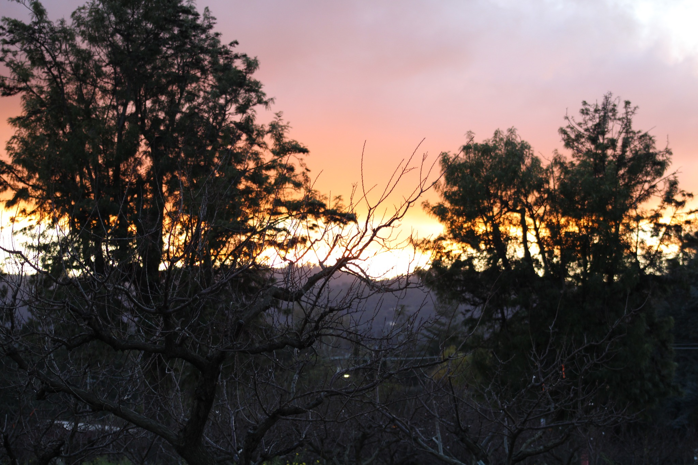
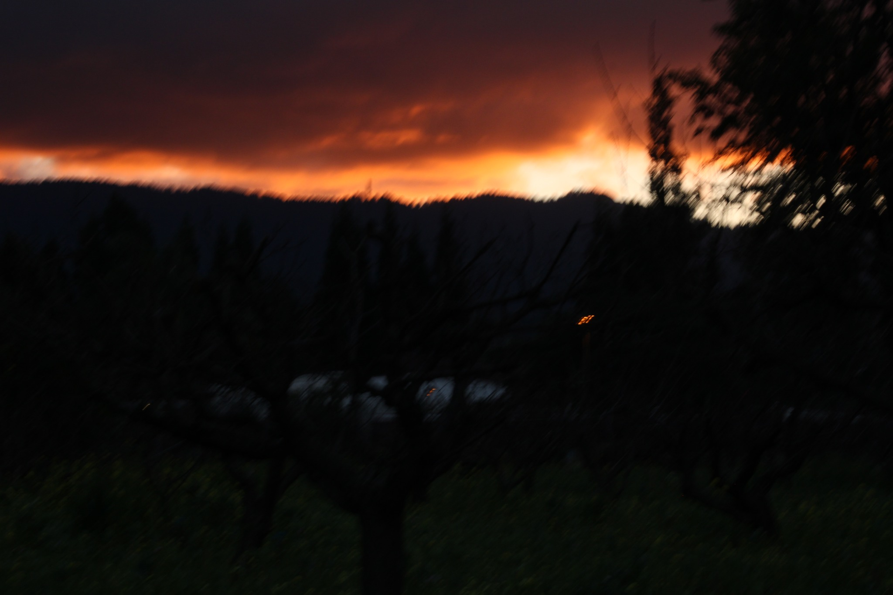
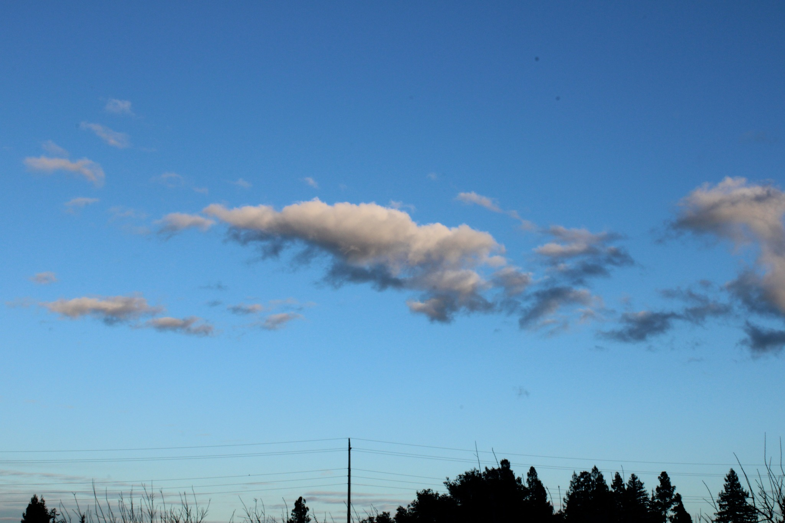
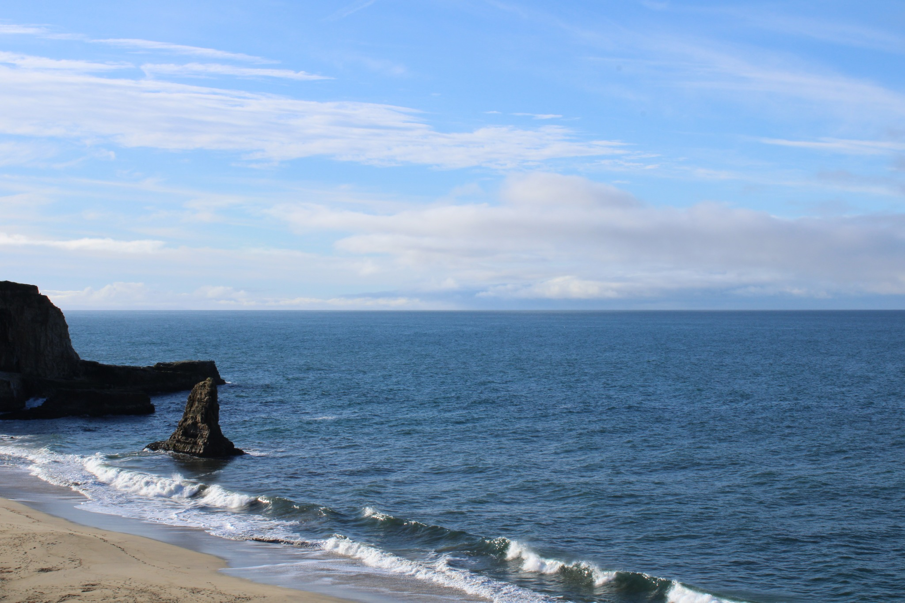
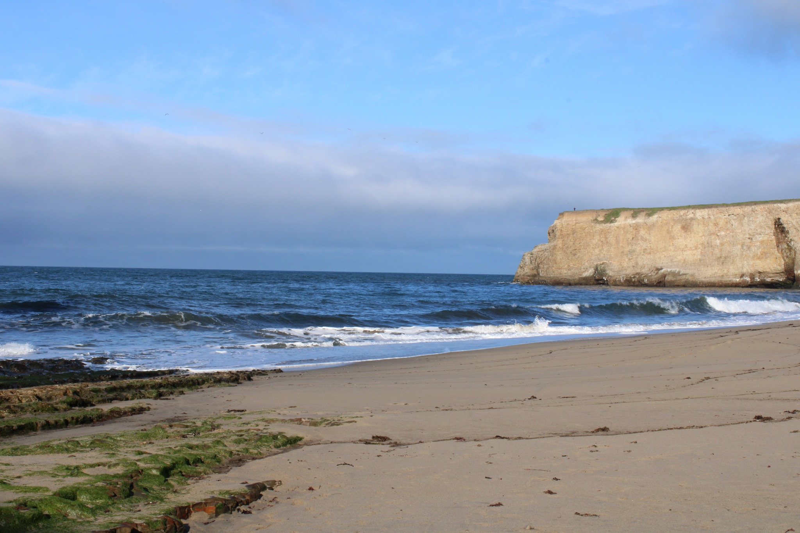
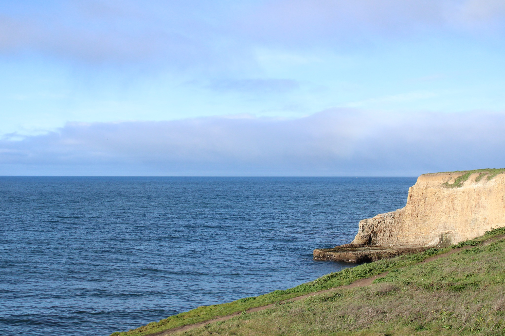

01 — 09
Images arranged warm to cool — from golden hour through open Pacific


Warmth at the edge of day.
The hour before dark when everything still burns.



Coast

The coast asks nothing of you.
It was here before. It will be here long after.


